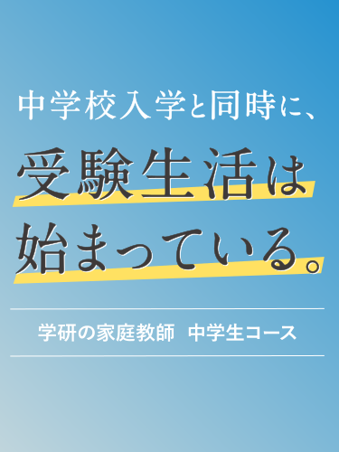
オンラインでの指導も行っているため
いつでもどこでも指導を受けることができます。
- 受験生におすすめ
- 受験生以外におすすめ
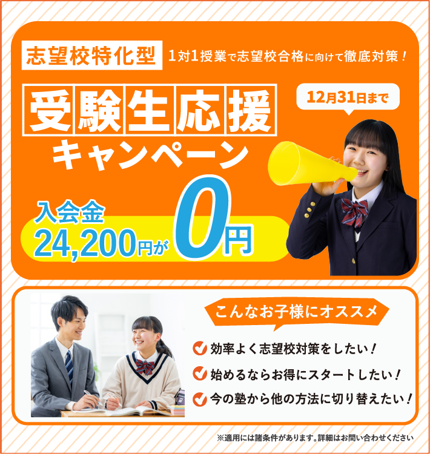
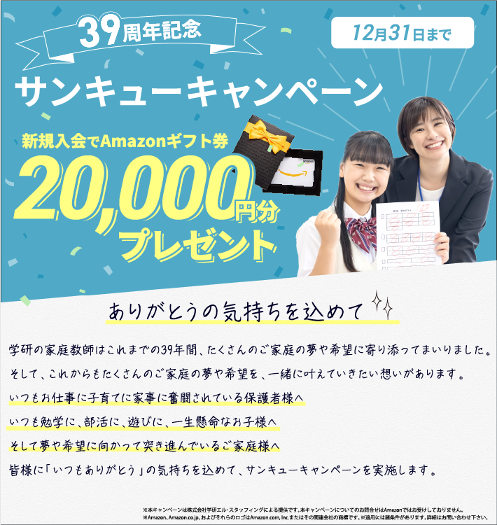
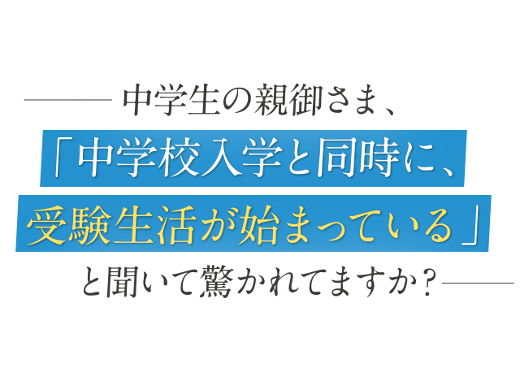
各科目の５段階評価の合計（素点合計45）は、
受験用に様々に加工され「内申点」と呼ばれています。
内申点は、「どんな中学時代を過ごしたのか」を点数化
したものです。
確実に言えることは、「すべての都道府県の公立高校で
内申点を活用した受験が行われている」ことと、だから
こそ「内申点を上げれば上げただけ、当日の学力検査で
取らなくてはいけない点数が下がる」という事実です。
逆に言えば、「内申点が低ければ、当日の学力検査で
高得点が必要になる」ということです。
その内申点が合否に活用されるという事実により、
「中学校入学と同時に、受験生活が始まっている」
とも言えるわけです。
東京都 中学２年生の親御様
9教科の内申点が33→42へアップ！
その後、都立竹早高校に合格！
User Voice 01
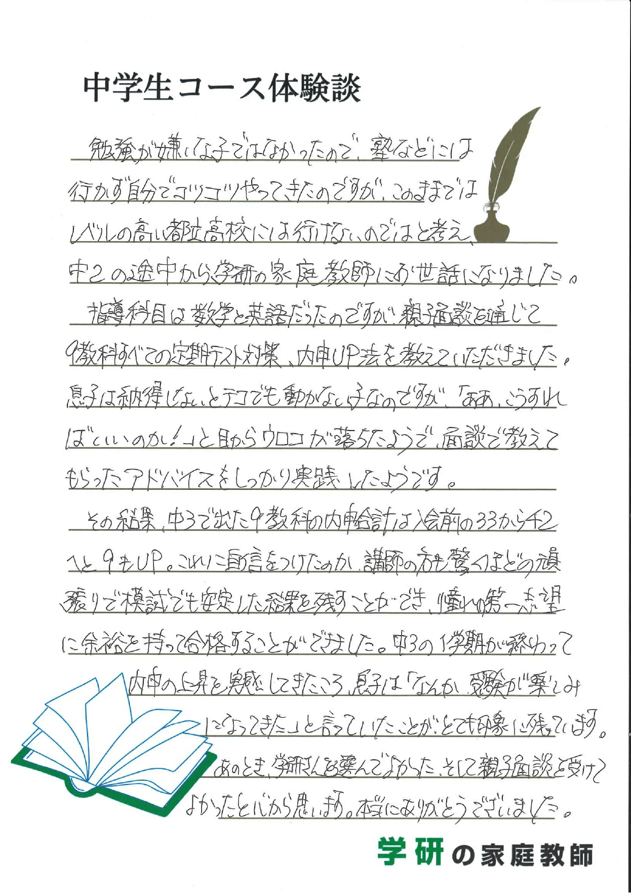
※個人の感想です。
大阪府 中学２年生の親御様
成績が落ち始めた数学が
半年で偏差値が60までアップ!!
User Voice 02
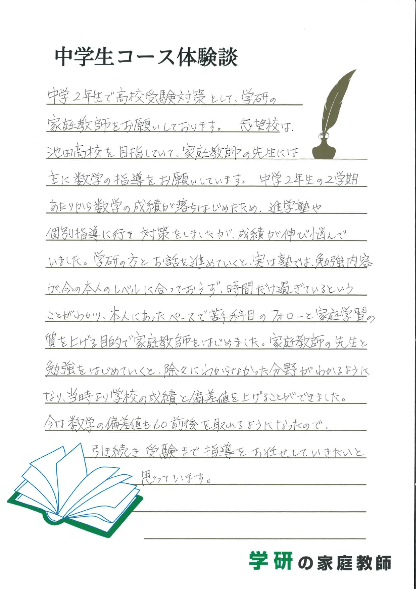
※個人の感想です。
東京都 中学２年生の親御様
モチベーションが上がり、
3ヵ月で合計30点アップ！！
User Voice 03
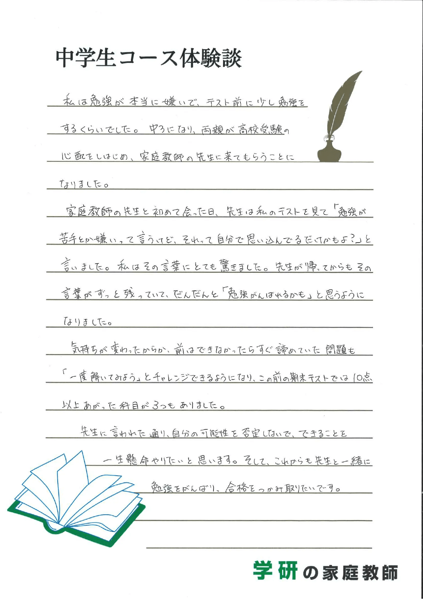
※個人の感想です。
神奈川県 中学２年生の親御様
半年で5科目248点→311点
63点大幅アップ！
User Voice 04
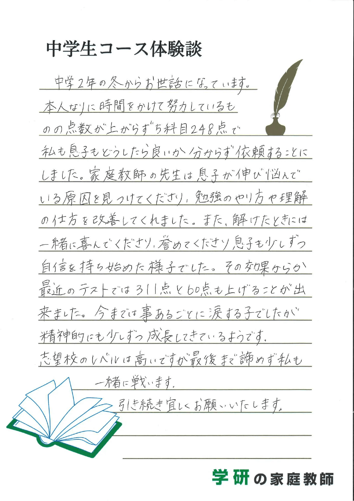
※個人の感想です。
愛知県 中学3年生の親御様
学校からは「志望校を変えよう…」しかし、
変えることなく愛知総合工科高校合格！！
User Voice 05
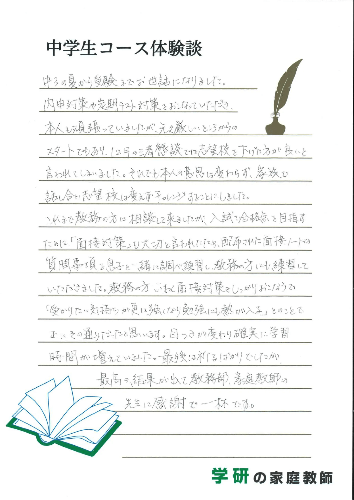
※個人の感想です。
兵庫県 中学3年生の親御様
弱点の分析、計画、実行で
芦屋学園高等学校に合格！！
User Voice 06
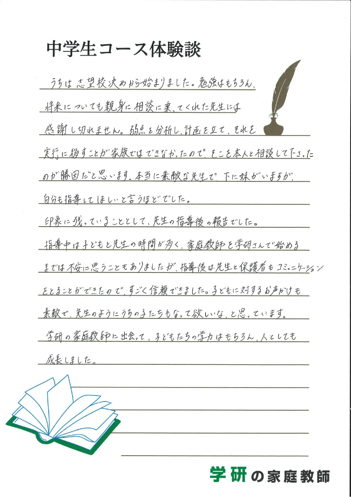
※個人の感想です。
反抗期で勉強しない
塾をサボりがち
定期テストの対策は
何をすればいいかわからない
内申点をあげるために
何をすればいいかわからない
成績オール３で安心していたが
志望高校には行けなさそう
三者面談でこのままでは
高校進学できないと言われた
家庭教師なんてどこも同じと思っていませんか？
いえいえ、学研の家庭教師だからこそ
できる強みがあります。
強み01
一人ひとりのお子様に合わせた
厳選された家庭教師陣
適正検査や面接などで「指導力・人物ともに合格」と判断された8％の人材のみを採用しています。
お子様をしっかり受け持つ責任感が強い、自慢の講
師陣です。
家庭教師のご紹介
本田 佳子
大学兵庫県立大学 理学部
指導において大切にしていること
私が教える時に一番大切にしていることは、自分が生徒にとって質問しやすい相手であることです。
私が塾に通っていた頃、先生に教えてもらった際に不明な点があっても聞き返せずにいた経験があったので気をつけて指導をしております。
渡辺 彩菜
大学名古屋大学 経済学部
指導において大切にしていること
生徒さんのペースに合わせ、コミュニケーションを取りながら楽しく勉強できるよう心がけています。
髙倉 勘
大学南山大学 法学部
指導において大切にしていること
1番の「こだわり」は生徒さんとのコミュニケーションです。
その日のコミュニケーションの内容によって授業の内容を変えたり、雑談を増やしたりしています。
生徒さんの理解に寄り添う授業を心がけています！
三國 由奈
大学筑波大学 理工学部
指導において大切にしていること
目の前の生徒とのコミュニケーションを大切にし、「この先生に教えてもらうのは面白い」と思ってもらえることを大前提に指導に臨んでいます。
その中で、指導内容に対して、生徒がどれだけ理解できているかを、返事やうなずき具合、目線などの反応から感じ取るよう心掛けています。
郡 遥平
大学名古屋大学 工学部
指導において大切にしていること
お子様に寄り添って指導することを一番大切にしています。
お子様の理解のスピードや興味に沿って臨機応変に指導をするよう心がけています！
冨田 将吾
大学筑波大学 理工学部
指導において大切にしていること
中高生の頃はお給料をもらっている割に、授業に愛がない努力不足な先生が多いなと感じていました。もちろん尊敬する先生もいましたが。
指導においては生徒の理解度や思い込みに気付き、どこがおかしいかを解説できて、初めてお給料に見合う働きをしていると考えています。
生徒の個性も見つつ、どうすれば伸ばせるか試行錯誤しています。
馬場 耀大
大学名古屋大学 経済学部
指導において大切にしていること
指導にあたっては、生徒と歩調を合わせることを大切にしています。
具体的には生徒のその日の様子に合わせ、実施する内容の分量や難易度を調節したりしています。
また、勉強面のみならず、私生活への気配りも大切にするよう心がけています。
強み02
一人ひとりのお子様に合わせた
学力・目標達成力の底上げ
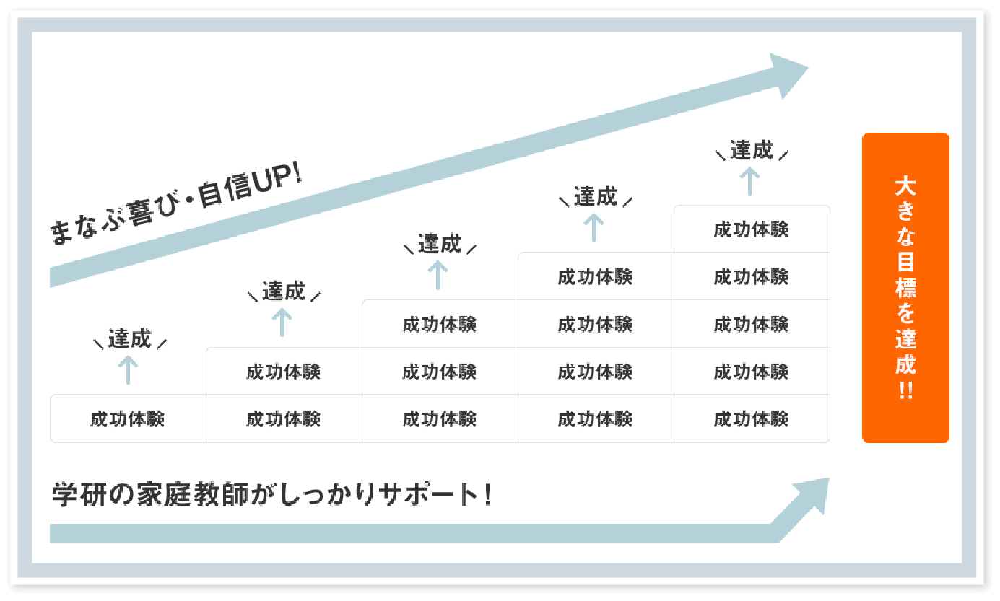
「計画倒れ・・」にならないよう家庭教師がしっかりサポートします。
小さな目標達成を積んでいくうちに、計画を実行して目標達成する喜びや学ぶ喜び、勉強する楽しさを身に着けることで自信にも繋がり、どんどん勉強ができるようになります。
家庭教師が学習面と生活面をサポートすることで「学
力の底上げ」、さらに「目標達成する力」も身に付きま
す。
強み03
一人ひとりのお子様に合わせた
定期テスト徹底対策
「テストで高得点を取って、高い内申点を狙う」ことをイメージした場合、必要な時間とやり方はある程度決まってきます。
まずは学校ワークを効果的に使い繰り返し学習を徹
底させることによって定期テストに対する基本的な得
点力を養います。
また、さらなる学年上位やトップレベルを目指す生徒
のために、問題演習用テキストの効果的なやり込み
通じて得点力に磨きをかけます。
強み04
一人ひとりのお子様に合わせた
内申点サポート
公立、私立を問わず、内申点とは無関係の受験をする生徒は稀と言えます。少しでも有利な受験を行うために、「内申点を上げる努力をする」というのは中学生活における基本中の基本だと捉えておく必要があります。
「５段階の評価をよくするためには、観点別評価を上げる必要がある」ということです。言い換えれば、観点
別評価は「５段階の評価を上げるために、何をしなけ
ればならないかを教えてくれるもの」と言えます。
しかし、観点別評価を見て、保護者の方が正確に足りない部分を把握するのは簡単ではありません。学研
の家庭教師では、プロの目で分析を行い、「強み・弱
み」や「足りないもの」などを正確に提示できます。それは定期テストのみならず、「音楽の歌のテスト」「英語のスピーチ」「授業の参加姿勢」など、あらゆることに及びます。
強み05
一人ひとりのお子様に合わせた
受験対策
入学試験というのは、決められた時間内で決められた問題数の中から、合格点を取る必要のある試験です。それを確実に実行するため、「スピードと正確性」
と「得点戦略」の二軸で受験対策をします。
「スピードと正確性」については、昨今の入試では、「スピードを上げて解く中から、どれだけ正確性を確保できるか」ということが大事です。スピードをもって正確に解く訓練を学研の独自メソッドによって身に着けていただきます。
「得点戦略」では、5教科すべてで満点を取らなければ合格できないような高校を受験することはまずないでしょう。このことは、各教科に対して「完璧でなくてもいい」ことです。
「満点をとらなくてもいい事実」から、力を入れる部分
とそうでない部分を見極め、残されている限られた時
間を有効に使えるように導きます。
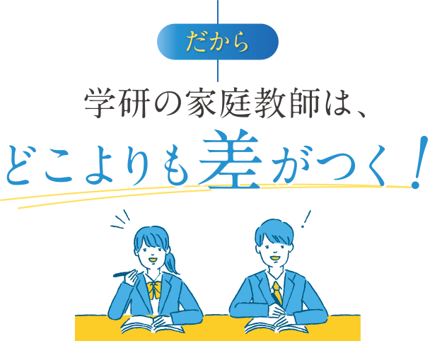
学研の家庭教師は安心の『月額制』。
高額教材のセット販売などもしておりません。
中学１年生コース
１時間あたり
3,520円
格段に難しくなる授業の理解度を高め、
高校受験のベース作りを後押しします。
中学２年生コース
１時間あたり
3,630円
本格的に高校志望校を決定する大事な年。
的確な定期テスト対策で確実に内申点をあげます。
中学３年生コース
１時間あたり
3,960円
目標校に標準を合わせた対策授業とテキストで
一緒に志望校合格を目指します。
国私公立 中高一貫コース
１時間あたり
４,510円
公立校より授業の進みがはやい国私立校。各校の
進度に合わせた学習内容で内部進学をサポート。
一人ひとりにあわせたベネフィットする教育を
可能にするためにサポート体制も万全です。
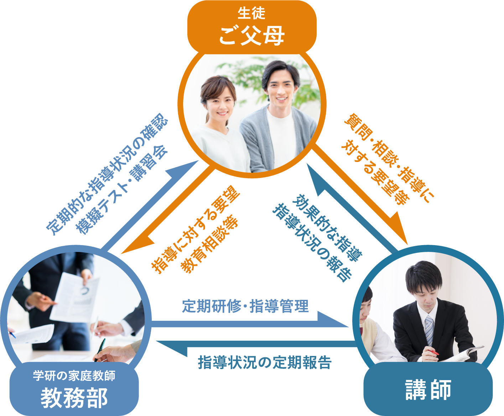
「すべては子どもたちのために」それが私たち、学研・塾グループ共通の想いです。
そして、子どもたちに直に接するのは、先生 ー つまり講師。登録数12万人超の豊富な講師陣から多様なニーズに対応します。
体験指導では、お子様の現状だけでなく、
お悩みなどお気軽にご相談ください。
まず、お子様には学研の家庭教師の講師、または専属
スタッフによる体験授業、カウンセリング（学習相談）
を受けていただきます。
カウンセリングでは、当社の豊富な経験・指導実績を
活かして、お子様の現在の問題点とその原因を分析。性格・学校・家庭環境なども考慮しながら、お子様に
とってベストな講師と指導内容をご提案させていただ
きます。
申し込みフォーム、またはお電話でもお気軽にお問合
せください。
ご相談やご質問も受け付けております。

大切なのは、家庭教師というスタイルがお子様に合っ
ているかをしっかり判断することです。「自分にあった勉強のやり方」をみつけることが
成果に繋がります。まずは家庭教師の雰囲気を味わっていただき、お子様
の反応を見てください。
※地域や指導内容により上記と異なる場合がございます。
詳細はお問い合わせください。
学研の家庭教師
体験指導
- ❶お子様の 現在の実力がわかります
- ❷お子様にぴったりの勉強方法が見つかります
- ❸今までの家庭教師との違いがわかります
ご入会を強くおすすめすることはありませんので、
ご安心ください。
よくあるご質問
大切なお子様の勉強方法ですから不安なことも多いはずです。
その他、ご不明な点などございましたら、お気軽にお問い合わせください。
成績についてのご質問
ほんとうに成績は上がりますか？
学研の家庭教師は、教務部に対して毎月の報告を義務付けております。「指導報告書」「定期ミーティング」「個別ミーティング」のシステムにより、お子様の指導状況をチェックし、目標達成までの学習管理を教務部のバックアップにより綿密に行いますので自主学習の習慣と共に学力が向上していきます。
受験対策は大丈夫ですか？1対1だと競争心がなくなったりはしませんか？
弊社は、受験対策として模擬テストをおすすめしており、 夏期講習・冬期講習も一部教務センターにて実施しております。 偏差値や志望校到達率の把握や単元別の習熟度チェックから、テスト慣れ、 会場慣れに至るまで、受験生のサポートはお任せください。
家庭教師についてのご質問
家庭教師は、アルバイト感覚ではありませんか？
弊社では多くの登録希望家庭教師の中から、学力だけでなく指導力や責任感等の家庭教師としての適正検査「YGPI」を実施して合否を決めております。紹介後も日々の指導状況から毎月の指導報告を義務付けるなど、しっかりとした管理をしておりますのでご安心ください。
本人との相性は合うのでしょうか？
要望や条件を詳しくお伺いし、専門のスタッフが選考にあたり、 ミーティングをした上で紹介しておりますので安心です。弊社は30年以上の実績により家庭教師の登録数も豊富なので、お子様にピッタリの家庭教師を紹介できるシステムとなっております。
家庭教師交代、進路相談などはできるのでしょうか？
大丈夫です。何かありましたら、すぐに弊社へご連絡ください。教務部による管理体制を整えておりますので、担当社員・スタッフが迅速に対応いたします。家庭教師個人ではまかなえないことを全て教務部でサポートさせていただきます。
学び方についてのご質問
特別な教材を購入しないといけないのですか？
弊社は、高額教材のローン契約による販売などは一切ありません。 お子様がお持ちの教科書等で指導を行うことができます。
勉強部屋がないのですが？
ご安心ください。リビングなどでも指導は可能です。また、自宅以外の場所で授業を希望される場合には、近隣の公共施設や家庭教師宅指導もございます。まずは一度ご相談ください。
弊社についてのご質問
テスト前の短期間だけでも申し込みできますか？
テスト前や、夏休みだけなどの短期間もお任せください。目的に応じた指導計画を立て、集中特訓を組むことができます。
病気で休んだり、用事で休んだりすると授業料はどうなりますか？
休んでしまった場合はその分の振替授業を行えます。それによって別途料金がかかることもございません。
やめたくても簡単にやめられないのではないですか？
弊社は1ヶ月前までに退会の申し出をいただければ、 いつでも退会することができます。その場合解約料は必要ありません。 また、退会申告できない場合であっても、1ヶ月分の指導料より高いお金はいただきません。 もちろん、保証金等もございません。